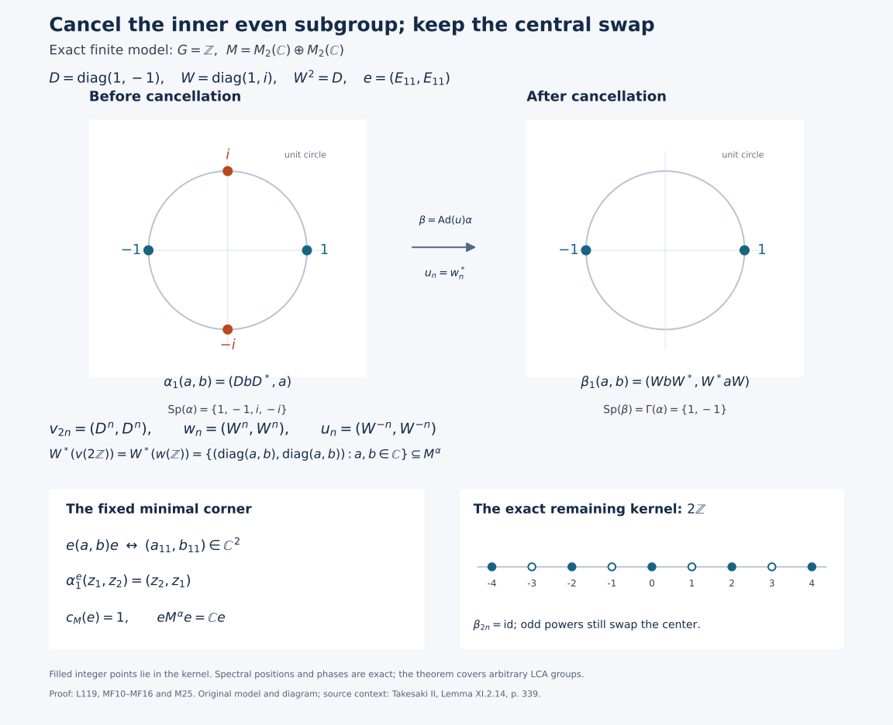

Independent programme restoration and proof completion by GPT-6 Astra (OpenAI), Ultra; independent mathematical/source review and guarded integration preparation by GPT-6.1 Sol (OpenAI), Ultra; full arbitrary-LCA cancellation, normal corner/center bridge, prescribed lift and exact original matrix model retained. Original grant wording and DejaVu font terms preserved. Human review and formal verification are not asserted.
Cancel an inner subgroup, then detect the exact spectrum
An extension of a subgroup representation is useful here only when it stays inside the original fixed algebra. We first isolate that cancellation mechanism. We then prove the full ambient-corner bridge which a minimal fixed projection needs, construct the prescribed implementers, and identify the resulting action spectrum and kernel. The two-matrix example at the end exhibits the cancellation explicitly.
Independent programme restoration and local proof completion: GPT-6 Astra (OpenAI), Ultra, 5 October 2026. New original expression, figure and code: CC0-1.0 to the extent of rights held. Historical programme components retain their recorded terms. Complete source-bound Spot-checked in a separate AI session.
Setting and precise earlier inputs
Unless a local lemma says otherwise, \(G\) is an arbitrary locally compact Hausdorff abelian group, \(H=\widehat G\), \(M\ne0\) is a von Neumann algebra faithfully normally represented on an arbitrary Hilbert space \(\mathcal H\), and \(\alpha:G\to\operatorname{Aut}(M)\) is an action by normal unital automorphisms which is point-ultraweakly continuous. No separability, sigma-compactness, countable basis, sigma-finite algebra or faithful state is assumed. Put \(F=M^\alpha\). In the main application \(Z(M)^\alpha=\mathbb C1\) and \(e\) is a nonzero minimal projection of \(F\). Minimal means that its only subprojections in \(F\) are zero and itself. This does not mean that \(e\) is minimal in \(M\).
The complete earlier inputs are the individual-time formula L89, the singleton isometry theorem L90, the full prescribed-corner L117 inner lift and continuity, and the full arbitrary-Hilbert L118 subgroup extension with its dual-map proof. Cocycle invariance is the complete L112 matrix/corner proof. The actual PC1 supports, PC2 central supports and PC4 center isomorphism, NR3 regular construction, NR4 representation independence, DA dual action, BD1, BD4–5, CP6, AT1, AT3, CF6–8 and L24 vector/tensor construction supply the concrete steps below.
For the full-corner Connes conclusion we use the actual complete, accepted L115 dual-center kernel proof, at its stated arbitrary-LCA hypotheses. It is installed strictly earlier in the accepted 124-unit, 904-record reader. No L119 statement is a premise of that earlier proof. The present opening announces the target and its hypotheses, rather than supplying an earlier realization theorem.
Detecting a kernel without a quotient Fourier theorem
We use positive eigenfrequency labels: \(\gamma_s(x)=p(s)x\) has frequency \(p\), with \(p(s)=(s,p)\). Precisely, the normal map \(T_bx=\int_G b(s)\gamma_s(x)\,ds\), \(b\in L^1(G)\), is labelled by \(f_b(p)=\int_G b(s)p(s)\,ds\); AT5 proves this entire normal integrated map. This is the reflection of the negative-character GL labelling. The GCC definition proves that every nonzero corner action spectrum is symmetric by adjoint reflection; therefore the two conventions give the same whole action spectrum and the same Connes intersection. No symmetry of an individual vector spectrum is asserted. AT3 gives norm-continuous predual orbits, so these actions satisfy the specified-dual hypotheses of AF0 and L89. Their isometric bound is one, by CF6 applied to an automorphism and its inverse.
The fixed algebra \(F=M^\alpha\) is a von Neumann algebra on \(\mathcal H\). It is the intersection of the ultraweakly closed equalizers of the normal maps \(\alpha_s\) and the identity, and is a unital star algebra. It is norm closed as well. BD4 approximates every contraction of its bicommutant by uniformly bounded strong-star elements of this norm-closed algebra; BD5 makes that convergence ultraweak. Closedness puts the limit in \(F\), so \(F=F''\). This elementary fact is available without a minimal projection or a subgroup representation.
For every such nonzero action \(\gamma\), the complete individual-time theorem says
\[ \operatorname{Sp}(\gamma_t) =\overline{\{(t,p):p\in\operatorname{Sp}(\gamma)\}}. \tag{M9} \]
If a closed subgroup \(K\le G\) acts trivially, then (M9) gives \(p(t)=1\) for every \(t\in K\) and every \(p\in\operatorname{Sp}(\gamma)\). Hence \(\operatorname{Sp}(\gamma)\subseteq K^\perp\). Conversely, if \(t\) annihilates \(\operatorname{Sp}(\gamma)\), (M9) gives the singleton operator spectrum \(\{1\}\), and L90 makes the surjective isometry \(\gamma_t\) the identity. The set of frequencies is nonempty: the fixed unit has the trivial frequency, as proved in GCC DEFINITION. Thus
\[ \ker\gamma=\operatorname{Sp}(\gamma)^\perp. \tag{MF1} \]
The assertion is about the annihilator of the spectrum; it does not say that the spectrum itself is a subgroup. We have used neither a Fourier transform on \(G/K\) nor arbitrary closed-set spectral synthesis.
We will also use the double-annihilator identity for a closed subgroup \(L\le\widehat G\). Here is its deduction at the precise existing harmonic input. The quotient \(\widehat G/L\) is LCH and its quotient map is open by QF1. If \(p\notin L\), injectivity of H3 biduality on this quotient supplies a character nontrivial at \(p+L\). Pull it back to \(\widehat G\). H3 on \(G\) identifies that character with evaluation at some \(t\in G\). It is trivial on \(L\) and nontrivial at \(p\), so \(t\in L^\perp\) and \(p\notin(L^\perp)^\perp\). The reverse inclusion \(L\subseteq(L^\perp)^\perp\) is the definition. This proves
\[ (L^\perp)^\perp=L \quad(L\text{ a closed subgroup of }\widehat G). \tag{MF2} \]
This is also the exact separation argument in L118 DUAL-MAP; arbitrary closed subgroups, rather than only open or countable ones, are covered.
Cancellation inside the fixed algebra
Cancellation lemma. Let \(K\) be a closed subgroup of \(G\), and suppose \(v:K\to\mathcal U(M^\alpha)\) is strongly continuous, is a representation, and satisfies \(\alpha_t=\operatorname{Ad}v_t\) for \(t\in K\). There is a strongly continuous fixed-valued \(\alpha\)-cocycle \(u\) whose perturbed action is trivial on \(K\).
Apply the actual full L118 group theorem on the given faithful Hilbert space. It gives
\[ w:G\longrightarrow\mathcal U(\mathcal H) \tag{M16} \]
and the two exact properties
\[ w_t=v_t\quad(t\in K), \qquad W^*(w(G))=W^*(v(K))\subseteq M^\alpha. \tag{M17} \]
The fixed algebra is a von Neumann algebra by the preceding section. Hence it contains the generated algebra on the right of (M17). This proves that every extended \(w_s\) is in \(M^\alpha\), not merely in \(B(\mathcal H)\).
Define
\[ u_s=w_s^*, \qquad \beta_s=\operatorname{Ad}(u_s)\circ\alpha_s. \tag{M18} \]
Adjoints of a strongly continuous unitary family are strongly continuous, since
\[ \|(w_s^*-w_r^*)\xi\|=\|(w_s-w_r)w_r^*\xi\|. \tag{MF3} \] The representation law and commutativity of \(G\) make the \(w_s\)'s commute. They are all fixed by \(\alpha\). Consequently
\[ u_{s+t}=u_s\alpha_s(u_t), \tag{M19} \]
Indeed \(w_{s+t}^*=w_t^*w_s^*=w_s^*w_t^*\), and \(\alpha_s(w_t^*)=w_t^*\). Expanding the two conjugations now gives \(\beta_s\beta_t=\beta_{s+t}\), with \(\beta_0=\mathrm{id}\) and inverse \(\beta_{-s}\). Each map is a normal unital star automorphism. Normality of fixed multiplication follows directly from CP6 by substituting the square-summable vector pairs.
There is a full topology check. By AT1, \(\alpha_s(x)\to\alpha_r(x)\) strongly and likewise for \(x^*\). For every fixed vector \(\xi\),
\[ \|(\beta_s(x)-\beta_r(x))\xi\| \le \|x\|\|(u_s^*-u_r^*)\xi\| +\|(\alpha_s(x)-\alpha_r(x))u_r^*\xi\| +\|(u_s-u_r)\alpha_r(x)u_r^*\xi\|\longrightarrow0. \tag{MF4} \] The same estimate for \(x^*\) gives strong-star continuity. The bounded orbit has norm \(\|x\|\); CP6's finite vector sums and uniformly small Cauchy–Schwarz tail make it ultraweakly continuous on arbitrary nets. Thus \(\beta\) is an action at the full hypotheses of L89 and L112, without claiming operator-norm continuity of \(w\) or of \(\alpha\).
For \(t\in K\), (M17) and the implementing assumption give
\[ \beta_t =\operatorname{Ad}(v_t^*)\circ\operatorname{Ad}(v_t) =\operatorname{id}. \tag{M20} \]
The action descends to \(G/K\). It is well defined there by the group law; every scalar normal test is constant on cosets and continuous on \(G\), so factors continuously by the quotient topology. The quotient is LCH and its quotient map open by QF1. This establishes point-ultraweak continuity of the descended action, but no quotient Fourier theorem is needed: (M9) already gives
\[ \operatorname{Sp}(\beta)\subseteq K^\perp. \tag{M21} \]
This proves the cancellation lemma and its spectral conclusion. \(\square\)
Historical problem. Why does (M17) imply \(w_s\in M^\alpha\) rather than only \(w_s\in B(\mathcal H)\)?
Solution. Each \(w_s\) lies in \(W^*(w(G))\). That algebra equals \(W^*(v(K))\), which lies in the ultraweakly closed fixed algebra. Extension of the individual subgroup operators alone would not give this containment; equality of generated von Neumann algebras is precisely the additional property used here. This is the complete earlier problem and its mathematical solution, with its fixed-algebra closure now explicit.
A fixed projection cuts out the regular corner
Let \(0\ne f\in M^\alpha\), initially without a fullness assumption. On \(\mathscr H=L^2(G,\mathcal H)\), use the full NR3 faithful normal regular representation
\[ [i(a)\xi](r)=\alpha_{-r}(a)\xi(r),\qquad [\lambda_s\xi](r)=\xi(r-s),\qquad N=(i(M)\cup\{\lambda_s:s\in G\})''. \tag{MF5} \] These bounded maps are defined on all of the completed vector \(L^2\) space, at the locally determined Haar and Radon-product conventions of L24. Since \(f\) is fixed, \(P=i(f)\) is the pointwise projection \(1\otimes f\). Its range is canonically \(L^2(G,f\mathcal H)\): L24's onto tensor identification identifies the range of \(1\otimes f\) on elementary tensors and then on the complete Hilbert spaces. \(P\) commutes with every \(\lambda_s\).
The corner \(PNP\), restricted to \(P\mathscr H\), has the faithful normal representation whose inverse extends a corner operator by zero on \((1-P)\mathscr H\). Both maps are ultraweakly continuous on their whole domains by the CP6 vector-series substitutions. We now identify its entire range, not just a generating inclusion.
The finite linear span \(\mathcal A\) of \(i(a)\lambda_s\) is a unital star algebra. Covariance gives
\[ (i(a)\lambda_s)(i(b)\lambda_t)=i(a\alpha_s(b))\lambda_{s+t}, \qquad (i(a)\lambda_s)^*=i(\alpha_{-s}(a^*))\lambda_{-s}. \tag{MF6} \] BD1/4/5 make it ultraweakly dense in \(N\). More explicitly, BD4 first gives uniformly bounded strong-star approximants from its norm closure, BD5 gives ultraweak convergence, and norm approximation from \(\mathcal A\) supplies the same ultraweak closure. Normal compression therefore makes \(P\mathcal A P\) ultraweakly dense in \(PNP\).
For each spanning term,
\[ Pi(a)\lambda_sP=i(faf)\lambda_sP. \tag{MF7} \] On \(L^2(G,f\mathcal H)\) the right side is exactly the regular coefficient for \(faf\in fMf\) followed by the regular translation. The coefficient representation of \(fMf\) on \(f\mathcal H\) is faithful and normal, including its normal inverse onto the concrete corner, by PC1 and CP6. Its reduced action is normal and point-ultraweakly continuous, as established in GCC SETTING. Hence the ultraweak closure of these very same products is the full regular crossing \((fMf)\rtimes_{\alpha^f}G\). Restriction and extension by zero now prove the full normal isomorphism
\[ (fMf)\rtimes_{\alpha^f}G \cong f(M\rtimes_\alpha G)f. \tag{M1} \]
Here and below the historical notation on the right means \(i(f)Ni(f)=PNP\). No assertion that compression preserves an arbitrary generated algebra was used; (MF6)–(MF7) and ultraweak density prove this particular identification. NR4 makes it the named crossing independently of the chosen faithful normal coefficient representation.
The actual dual action satisfies \(\theta_p(i(a))=i(a)\) and \(\theta_p(\lambda_s)=\overline{p(s)}\lambda_s\), by DA ACTION. It fixes \(P\). Formula (MF7) shows that the corner map intertwines this restricted dual action with the canonical dual action on the reduced crossing on every covariant product. Normality and the established ultraweak density extend the identity to the full algebras. Thus (M1) is dual equivariant with its exact negative character, and has a normal inverse.
Fullness and centers pass through that corner
Assume now \(c_M(f)=1\), with ambient central support as in PC2. The following elementary construction avoids an unproved strong-sum assertion. Let
\[ q=\bigvee_{v\in\mathcal U(M)}vfv^*. \tag{MF8} \] PC1 constructs this arbitrary projection join. Every unitary conjugation permutes its summands, so fixes \(q\). It follows that \(q\) commutes with all of \(M\): for a selfadjoint contraction \(a\), CF6–7 make \(v=a+i(1-a^2)^{1/2}\) a unitary, and \(a=(v+v^*)/2\). Scaling and taking real and imaginary parts covers every element. Thus \(q\) is central and dominates \(f\). Every central projection dominating \(f\) dominates all its unitary conjugates. Consequently \(q=c_M(f)=1\).
A normal unital star homomorphism preserves these joins. Here are the needed details. For \(a\ge0\), the contractions \(a(a+1/n)^{-1}\) converge strongly to the range-support projection \(s(a)\): they vanish on \(\ker a\), and
\[ \|(1-a(a+1/n)^{-1})a\eta\|\le n^{-1}\|\eta\| \tag{MF9} \] on the dense range domain; the uniform bound completes the convergence. Continuous calculus, normality and BD5 therefore show that the homomorphism carries \(s(a)\) to the support of its image. A finite join of projections is the support of their positive sum, since its kernel is the intersection of their kernels, as follows by testing the positive quadratic forms. Arbitrary joins are increasing strong suprema of finite joins. Normality and the same bounded strong-to-ultraweak test preserve this supremum as well. This proves the asserted join preservation on arbitrary index sets.
Applying this to \(i\), the join of \(i(v)Pi(v)^*\) is one. If \(z\in Z(N)\) is a projection dominating \(P\), it dominates every one of these conjugates and hence their join. Thus \(z=1\), proving \(c_N(P)=1\).
The complete normal center theorem PC4 now supplies
\[ Z(N)\overset{\cong}{\longrightarrow}Z(fNf), \qquad z\longmapsto zf. \tag{M2} \]
with \(f\) on the right again meaning \(P\). Its proof gives the central extension by an arbitrary orthogonal family of corner copies, and its square-summable vector formula proves both ultraweak-continuity directions on full domains. It is not an unproved commutant-induction principle. Since \(\theta_p(P)=P\), \(\theta_p(zP)=\theta_p(z)P\); therefore the center isomorphism is equivariant. Combine it with the normal dual-equivariant map (M1). The dual actions have the same kernel on their centers. The actual L115 theorem applied to the original and reduced nonzero systems gives
\[ \boxed{z_M(f)=1 \quad\Longrightarrow\quad \Gamma(\alpha^f)=\Gamma(\alpha).} \tag{M3} \]
This is ambient fullness in \(M\), exactly as stated. Fullness merely in \(M^\alpha\) is a different hypothesis and is not substituted for it. \(\square\)
A minimal fixed corner produces fixed implementers
Return to the main assumptions. Minimality in \(F\) gives \(eFe=\mathbb Ce\). One can verify the familiar equivalence using only earlier continuous calculus and supports: if a selfadjoint element of \(eFe\) had two distinct spectral values, nonzero nonnegative continuous functions with disjoint spectral supports would give two nonzero orthogonal range-support projections in \(eFe\), contradicting minimality. If its spectrum is a singleton, the isometric continuous calculus makes it a scalar multiple of \(e\). Real and imaginary parts then cover every element. Since the fixed elements in a fixed corner are precisely the compressed fixed algebra by GCC SETTING,
\[ (eMe)^{\alpha^e}=eM^\alpha e=\mathbb Ce. \tag{M4} \]
An automorphism carries the least central projection dominating \(e\) to the least central projection dominating its image. Thus \(\alpha_s(c_M(e))=c_M(e)\). This central projection is nonzero and central ergodicity leaves only the nonzero scalar projection. Hence
\[ z_M(e)=1. \tag{M5} \]
The only nonzero fixed projection of the reduced system is its identity \(e\). The defining GCC intersection is consequently just that corner's ordinary action spectrum:
\[ \Gamma(\alpha^e)=\operatorname{Sp}(\alpha^e). \tag{M6} \]
The actual full-corner conclusion (M3) therefore proves
\[ \boxed{\Gamma(\alpha)=\operatorname{Sp}(\alpha^e).} \tag{M7} \]
Set
\[ K=\Gamma(\alpha)^\perp =\{t\in G:(t,p)=1\text{ for every }p\in\Gamma(\alpha)\}. \tag{M8} \]
This is a closed subgroup: it is an intersection of kernels of continuous characters. A closed subgroup of an LCH group is LCH, by intersecting compact neighborhoods with the subgroup. Formula (M9), (M7), and the singleton isometry theorem give
\[ \alpha_t^e=\operatorname{id}_{eMe} \qquad(t\in K). \tag{M10} \]
The whole group fixes the prescribed lifts
To apply L117 with the correct orientation, use its two actions on \(K\) as follows: its first action is the identity on \(M\); its second is \(\alpha|_K\). They fix \(e\), which is full by (M5). Their reduced actions agree by (M10); the constant corner cocycle is the unit \(e\). L117's whole continuity theorem, followed by its prescribed-corner inner theorem, yields
\[ v:K\longrightarrow\mathcal U(M), \qquad \alpha_t=\operatorname{Ad}v_t, \qquad v_te=ev_t=e. \tag{M11} \]
This yields \(\alpha_t=\operatorname{Ad}v_t\), not its inverse. The lift is strongly continuous on all of the closed subgroup \(K\); it is not a discontinuous choice of separate inner implementers. ST2 transfers this continuity from the standard representation used in L117 to the given faithful normal representation, since all the operators are unitaries.
For \(s,t\in K\), \(v_sv_t\) and \(v_{s+t}\) implement the same automorphism and have the same prescribed corner \(e\). Full-corner uniqueness gives
\[ v_{s+t}=v_sv_t. \tag{M12} \]
In particular \(v_0=1\) by comparison with the identity implementer. For an arbitrary \(r\in G\), commutativity of \(G\) makes \(\alpha_r(v_t)\) another implementer of \(\alpha_t\), while
\[ \alpha_r(v_t)e =\alpha_r(v_te) =e. \tag{M13} \]
and the analogous right-corner identity also holds. Full-corner uniqueness gives
\[ \alpha_r(v_t)=v_t \qquad(r\in G,t\in K). \tag{M14} \]
Thus the subgroup representation is fixed by the entire original group, not merely by \(K\):
\[ \boxed{v(K)\subseteq\mathcal U(M^\alpha).} \tag{M15} \]
These are exactly the premises of the earlier cancellation lemma.
The remaining spectrum and kernel are exact
Apply that lemma to the just-constructed \(K\) and \(v\). It gives the fixed-valued representation \(w\), cocycle \(u=w^*\), and normal continuous \(\beta=\operatorname{Ad}(u)\alpha\) satisfying (M16)–(M21).
The complete L115 kernel theorem also makes \(\Gamma(\alpha)\) a closed subgroup. Indeed it is the kernel of the continuous dual action restricted to the crossed-product center: a group-action kernel is a subgroup, and it is closed because every scalar normal test of \(\theta_p(z)-z\) is continuous and the tests separate points. The restriction to the center has the inherited topology, since fixed commutation conditions are ultraweakly closed. Applying the proved double-annihilator identity (MF2) therefore gives
\[ K^\perp=\Gamma(\alpha). \tag{M22} \]
The complete L112 matrix-corner theorem applies to the actual strongly continuous cocycle in \(M\) constructed here. Its two corner actions are normal and point-ultraweakly continuous by that full proof, with the general GCC equivalent-fixed-corner theorem as its earlier premise. It gives cocycle invariance. The defining nonzero fixed-corner intersection includes the identity corner, so
\[ \Gamma(\alpha) =\Gamma(\beta) \subseteq\operatorname{Sp}(\beta). \tag{M23} \]
Together with (M21) and (M22), this proves
\[ \boxed{\operatorname{Sp}(\beta)=\Gamma(\alpha).} \tag{M24} \]
We already have \(K\subseteq\ker\beta\). Conversely, if \(\beta_s=\mathrm{id}\), (M9) forces \(p(s)=1\) for every \(p\in\operatorname{Sp}(\beta)=\Gamma(\alpha)\), hence \(s\in K\). Thus \(\ker\beta=K\), and (M22) proves the entire historical conclusion
\[ \boxed{ \operatorname{Sp}(\operatorname{Ad}(u)\alpha) =\Gamma(\alpha) =\ker(\operatorname{Ad}(u)\alpha)^\perp.} \tag{M25} \]
The equality specifies both the action spectrum and the exact kernel. It does not assert that every original action is already ergodic, has a minimal projection in \(M\), or has a prescribed period. \(\square\)
A two-matrix system loses two spectral points
Take the discrete LCA group \(G=\mathbb Z\), \(M=M_2(\mathbb C)\oplus M_2(\mathbb C)\), and
\[ D=\begin{pmatrix}1&0\\0&-1\end{pmatrix},\quad W=\begin{pmatrix}1&0\\0&i\end{pmatrix},\quad W^2=D, \qquad \alpha_1(a,b)=(DbD^*,a). \tag{MF10} \] The inverse is \((a,b)\mapsto(b,D^*aD)\), so powers define an action. Every action of the discrete group is continuous, and the finite-dimensional maps are normal. On the center, \(\alpha_1\) swaps the two scalar entries, so \(Z(M)^\alpha=\mathbb C(1,1)\). The full fixed algebra is
\[ M^\alpha=\{(a,a):a\text{ diagonal}\},\qquad e=(E_{11},E_{11}),\qquad c_M(e)=1. \tag{MF11} \] Here \(e\) is minimal in the displayed two-dimensional algebra. It is full in \(M\), since any central projection dominating it must be the identity in both summands. The reduced action on \(eMe\cong\mathbb C^2\) swaps the entries.
For \(d_1=1,d_2=-1\), the invariant two-dimensional vector subspace of pairs of \(E_{ij}\) coordinates carries the operator
\[ (a_{ij},b_{ij})\longmapsto(d_i d_j b_{ij},a_{ij}),\qquad \begin{pmatrix}0&d_i d_j\\1&0\end{pmatrix}. \tag{MF12} \] For \(i=j\) its eigenvalues are \(1,-1\); for \(i\ne j\) they are \(i,-i\). These four coordinate-pair spaces span \(M\), and their two distinct eigenvalues give a basis on each. Hence the ordinary operator spectrum of \(\alpha_1\) is exactly \(\{1,-1,i,-i\}\). Every character of \(\mathbb Z\) is \(n\mapsto z^n\), uniquely determined by \(z\in\mathbb T\); every such map is continuous. The compact-open topology is precisely the circle topology, since compact subsets of the discrete integers are finite, evaluation at 1 is continuous, and convergence at 1 implies convergence of every finite set of powers. The closed action spectrum is therefore identified by (M9), whose evaluation at 1 is this homeomorphism. We obtain
\[ \operatorname{Sp}(\alpha)=\{1,-1,i,-i\},\qquad \Gamma(\alpha)=\{1,-1\},\qquad K=2\mathbb Z. \tag{MF13} \] The Connes calculation is also direct. The nonzero fixed projections are \(e\), \(1-e\), and \(1\). Each of the first two reduced systems is the swap on \(\mathbb C^2\), with spectrum \(\{1,-1\}\); the last has the four-point spectrum above. Their intersection is exactly the middle set in (MF13), without using a numerical approximation or a missing general spectral theorem.
The prescribed implementer and an extension with the exact same generated algebra are
\[ v_{2n}=(D^n,D^n),\qquad w_n=(W^n,W^n),\qquad u_n=(W^{-n},W^{-n}). \tag{MF14} \] Indeed \(\alpha_{2n}=\operatorname{Ad}(D^n,D^n)\), \(v_{2n}e=e\), and each \(w_n\) is fixed by \(\alpha\). The representation \(w\) extends \(v\) because \(W^{2n}=D^n\). Both generated algebras are exactly \(\{(\operatorname{diag}(a,b),\operatorname{diag}(a,b)):a,b\in\mathbb C\}\): \(W\) is a linear combination of \(I,D\), while \(D=W^2\).
The perturbed generator is explicitly
\[ \beta_1(a,b)=(WbW^*,W^*aW),\qquad \beta_1^2=\mathrm{id}. \tag{MF15} \] For the first formula use \(W^*D=W\) and \(DW=W^*\). Applying it twice gives \((a,b)\). The action is not the identity because it still swaps the two central summands. Its unit is a \(+1\) eigenvector, and \((I,-I)\) is a \(-1\) eigenvector. All other complex numbers are resolvent for this involution, since for \(\lambda\ne\pm1\), \((\beta_1-\lambda I)^{-1}=(\beta_1+\lambda I)/(1-\lambda^2)\). Formula (M9) on \(\mathbb Z\) consequently proves
\[ \operatorname{Sp}(\beta)=\{1,-1\}=\Gamma(\alpha),\qquad \ker\beta=2\mathbb Z. \tag{MF16} \] The example explains both what disappears and what remains: the off-diagonal pair phases \(i,-i\) are removed, but the central swap still detects every odd integer. The diagram uses exact finite coordinates and integer powers, not a sampled approximation to an arbitrary-group spectrum.
Additional exercise. Why does taking an arbitrary extension of \(v\) into \(B(\mathcal H)\) fail to establish the theorem?
Solution. The proposed cocycle must lie in \(M\) and be fixed by the original action for (M19) and the cancellation argument to apply. An extension in all of \(B(\mathcal H)\) need not have either property. L118's equality of generated algebras proves both at once. In this model the equality can be verified directly from \(D=W^2\) and \(W=(1+i)I/2+(1-i)D/2\).
Source and bounded conclusion
The historical result is Takesaki, Theory of Operator Algebras II, Lemma XI.2.14, printed339. The exact approved copy was checked before reading its actual page. The present organization starts from fixed-algebra cancellation, proves the full regular-corner and center bridge explicitly, and then feeds the minimal projection into that mechanism. The original M1–M25 display bodies and historical problem are retained; the vague former strong-sum sentence is replaced by (MF8)–(MF9) and normal join preservation. The complete free-source PC, Haar, concrete-predual, action-topology and harmonic alternatives remain actual programme inputs. The citation supplies context and credit, not an unwritten mathematical premise.
This proves the full arbitrary-LCA/arbitrary-von-Neumann conclusion under central ergodicity and a nonzero minimal fixed projection, at the exact earlier inputs above. A general realization, classification or complete C1–C6 result is not inferred.
Exact cancellation in two matrix summands

Figure. This is the exact finite model in MF.MODEL, equations MF10–MF16, illustrating the full conclusion M25. For the integer action on \(M_2(\mathbb C)\oplus M_2(\mathbb C)\), \(\alpha_1(a,b)=(DbD^*,a)\) with \(D=\operatorname{diag}(1,-1)\). The diagram places all four original spectral points at their exact unit-circle coordinates. The nonzero fixed minimal corner \(e=(E_{11},E_{11})\) is full in the ambient algebra; under \(e(a,b)e\leftrightarrow(a_{11},b_{11})\), the reduced action is the swap on \(\mathbb C^2\). Its two spectral points are exactly \(\Gamma(\alpha)=\{1,-1\}\).
Here \(K=2\mathbb Z\), \(v_{2n}=(D^n,D^n)\), and \(w_n=(W^n,W^n)\) for \(W=\operatorname{diag}(1,i)\). The identities \(W^2=D\) and \(W=(1+i)I/2+(1-i)D/2\) prove equality of their generated two-dimensional diagonal von Neumann algebras. The fixed-valued cocycle \(u_n=w_n^*\) gives \(\beta_1(a,b)=(WbW^*,W^*aW)\). This is a nonidentity involution, with the central swap detecting every odd integer. Thus its action spectrum is exactly \(\{1,-1\}\) and its kernel is exactly \(2\mathbb Z\); filled points on the integer line mark the kernel. The circle and the displayed integer segment are illustrations of exact formulas, not numerical spectral evidence for the arbitrary-group theorem.
The full proof of action-spectrum equality uses the individual-time theorem and the identification \(\widehat{\mathbb Z}\cong\mathbb T\), as written in MF.MODEL. build_figure.py checks the exact eight-dimensional matrices with symbolic arithmetic and renders both SVG and PNG. EXACT_MODEL_CHECK.json records the computation's precise scope. A three-dimensional scene would add no mathematical information to this planar circle, subgroup and compression diagram, so Blender is not used.


This model, code, diagram and caption are original programme expressions, CC0-1.0 to the extent of rights held. Human-source context: Masamichi Takesaki, Theory of Operator Algebras II, Lemma XI.2.14, printed p.339, read in the exact approved copy. The figure is not adapted from that source; its source citation does not substitute for any internal proof.